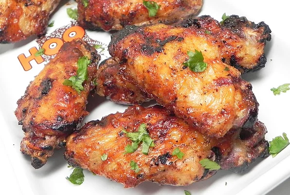

3-Ingredient Baked BBQ Chicken Wings
This BBQ sauce is unexplainable. Its not a rich BBQ but not quite a honey BBQ either. You'll love these!
INGREDIENTS
- 5 pounds frozen chicken wings, thawed
- 10 fluid ounces barbeque sauce (such as Kraft® Original)
- 2 tablespoons maple-flavored syrup (such as Mrs. Butterworth's®)
STEPS
- Preheat oven to 425 degrees F (220 degrees C). Arrange wings in a baking pan.
- Mix barbeque sauce and syrup together in a bowl; pour evenly over wings.
- Bake in the preheated oven, flipping every 15 to 20 minutes, for 1 hour. Turn on oven's broiler and broil wings until golden brown, about 5 minutes per side. An instant-read thermometer inserted near the bone should read 165 degrees F (74 degrees C).